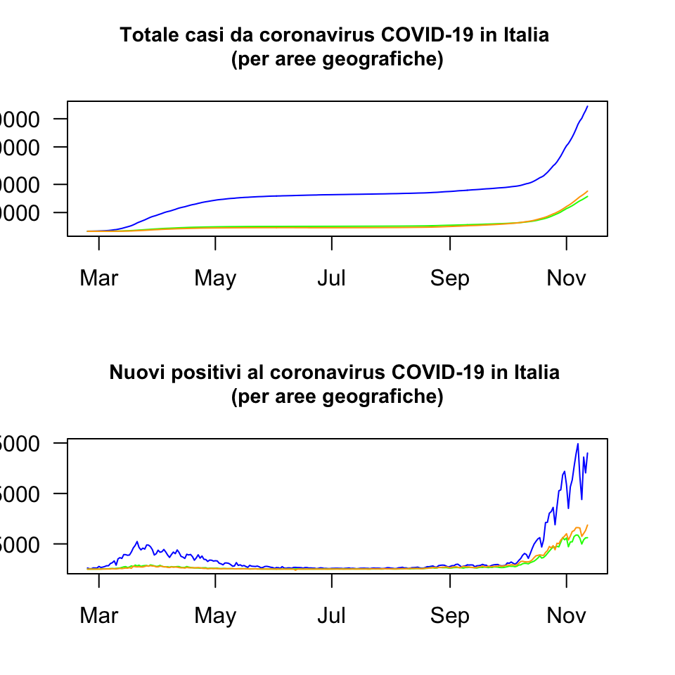
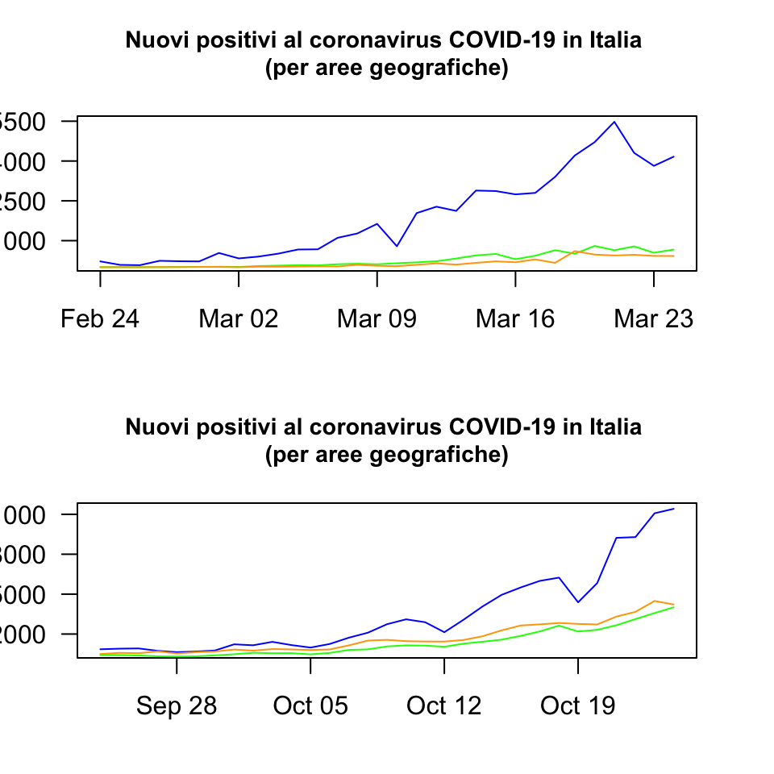
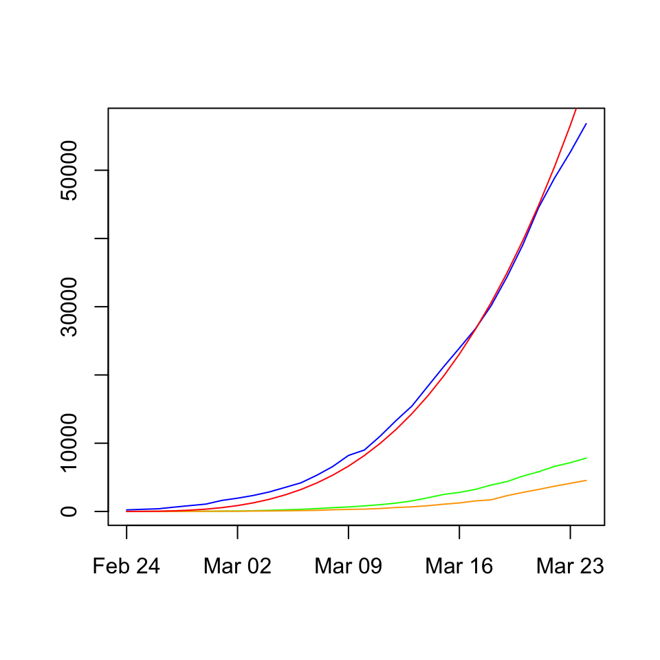
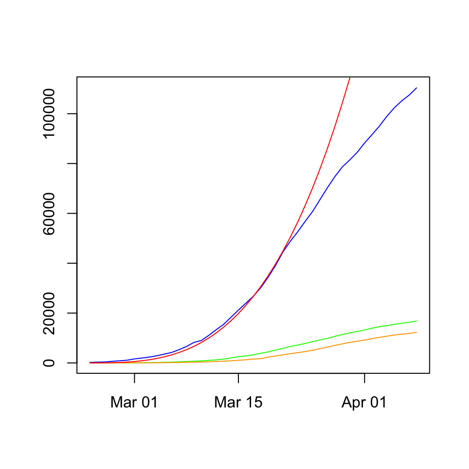

Since the end of February 2020, shortly after my father passed away, Italy has been hit by a difficult health emergency, which seemed far distant only a few weeks before. Probably a perception increased by my being involved in my father’s illness, in experiencing his sorrow and feeling of utter impotence against it, I listened to the news on the Chinese COVID-19 epidemic with a sense of light interest, although the comments by various medical scientists interviewed by TV news bulletins somewhat were able to slip into my consciousness a sense of danger incoming, sooner or later. Sooner as it may have been it would have been a menace of little importance in the face of the monster that was inexorably taking my father’s life away. The coronavirus pandemic, right after China, hit Italy so hard that our country was internationally perceived as (and to some extent it was effectively) unprepared as well as guiltily responsible for the harsh consequences it has had on its population and health care system. As the data for the first wave shows, the epidemic hit the North of Italy, it skimmed the Centre, while it left the South mostly untouched by it.
## [1] "date" "stato"
## [3] "codice_regione" "denominazione_regione"
## [5] "lat" "long"
## [7] "ricoverati_con_sintomi" "terapia_intensiva"
## [9] "totale_ospedalizzati" "isolamento_domiciliare"
## [11] "totale_positivi" "variazione_totale_positivi"
## [13] "nuovi_positivi" "dimessi_guariti"
## [15] "deceduti" "casi_da_sospetto_diagnostico"
## [17] "casi_da_screening" "totale_casi"
## [19] "tamponi" "casi_testati"
## [21] "mortalità" "nuovi_tamponi"
## [23] "decreto_legge" "dpcm1"
## [25] "dpcm2" "dpcm3"
## [27] "dpcm4" "dpcm5"
## [29] "dpcm6" "dpcm7"
## [31] "dpcm8" "dpcm9"
## [33] "pre_esodo" "mado"
## [35] "esodo1" "esodo2"
## [37] "esodo3"## [1] "0" "1" "2" "3" "5" "6" "7" "8" "9" "10" "11" "12" "13" "14" "15"
## [16] "16" "17" "18" "19" "20" "21" "22"A naive look at the open data by the Italian Protezione Civile would show the increase in the total amount of COVID-19 cases registered by the Italian health authorities since the end of February 2020. We already know that these information are misleading. Researchers estimated that the actual cumulative number of contagions is much larger, since testing has been limited to people showing symptoms caused by the infection. We have come to know that the majority of people infected by the virus show no symptoms at all. Moreover, the capacity to test was much smaller during the first wave than today.

Although it seems quite fair to talk about a second wave spreading since autumn 2020, its real impact as compared to the first wave of the first part of the year remains mostly unknown. So one should not scare too much in seeing how much higher and steeper the curve of the new cases looks. We know that we are able to perform a much more massive amount of tests today than we were in march or april. Perhaps the two waves would have looked more similar had we performed the same amount of tests during the first wave. A naive approximation can be offered by the share of new cases over the number of tests, which will be shown later.
If we limit our quick look of the data to 30 days since the beginning of the two waves we might be able to see some differences. The most striking one, given that the difference in magnitude is mostly due to the increased number of tests, is that now the pandemic looks as a phenomenon involving the whole peninsula. The Centre and the South seems involved as well as the North.

Now I would like to show a small exercise, where I compare the start of the first wave to an exponential computed elevating the series [1-30] to the power of 3.25. We see that the computed exponential fits quite well the actual curve of the COVID-19 cases in the North of Italy up to the end of March.

Limiting our observations to the North of Italy, we see that keeping the exponential allure would have resulted in a steeper curve, hence in a large amount of cases in a short period.

## R version 4.0.2 (2020-06-22)
## Platform: x86_64-apple-darwin17.0 (64-bit)
## Running under: macOS Catalina 10.15.7
##
## Matrix products: default
## BLAS: /Library/Frameworks/R.framework/Versions/4.0/Resources/lib/libRblas.dylib
## LAPACK: /Library/Frameworks/R.framework/Versions/4.0/Resources/lib/libRlapack.dylib
##
## locale:
## [1] en_GB.UTF-8/en_GB.UTF-8/en_GB.UTF-8/C/en_GB.UTF-8/en_GB.UTF-8
##
## attached base packages:
## [1] stats graphics grDevices utils datasets methods base
##
## loaded via a namespace (and not attached):
## [1] compiler_4.0.2 magrittr_1.5 tools_4.0.2 htmltools_0.4.0
## [5] yaml_2.2.1 Rcpp_1.0.4.6 stringi_1.4.6 rmarkdown_2.3
## [9] knitr_1.29 stringr_1.4.0 xfun_0.15 digest_0.6.25
## [13] rlang_0.4.5 evaluate_0.14